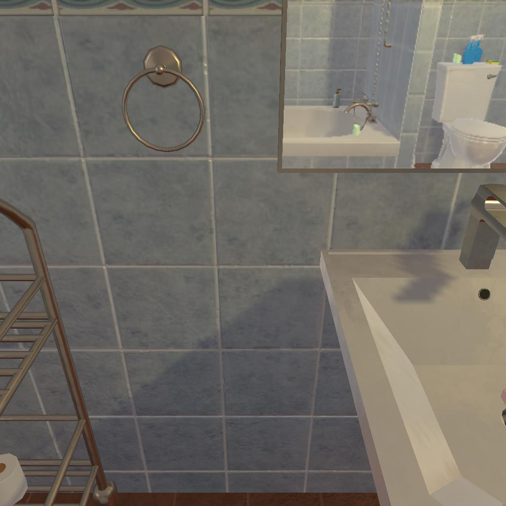

---------------------------------------------------------task: 25---------------------------------------------------------
--------------------------------------------------------------------------------------------------------------------------------------------------------------------
--------------------------------------------------------------------------------------------------------------------------------------------------------------------
Step:--------------------------------------------------------------------------0-------------------------------------------------------------------------------
----------------------------------------
VLM Prompt:
**Task**
Please perform as an embodied AI agent. Our final objective is to find two dishsponge and put them in cart. Below is the plan for completing the task, the current observation, alongside historical data and admissible actions for the next step. Please determine the best action for the next step!
**Plan**
Below is a detailed step-by-step plan to complete the task.
1. Find a dish sponge.
2. Pick up the dish sponge.
3. Locate a cart.
4. Place the picked-up dish sponge in the cart.
5. Find another dish sponge.
6. Pick up the second dish sponge.
7. Return to the previously located cart.
8. Place the second picked-up dish sponge in the cart with the first one.
**Current Observation**
Displayed is an image capturing the current position of the agent.
**History Information**
Displayed are the previous observations with their corresponding actions.
No history.
**Admissible Actions**
(1): go to bathtub 1
(2): go to bathtubbasin 1
(3): go to cart 1
(4): go to toilet 1
(5): go to garbagecan 1
(6): go to toiletpaperhanger 1
(7): go to shelf 1
(8): go to shelf 2
(9): go to shelf 3
(10): go to shelf 4
(11): go to sink 1
(12): go to sinkbasin 1
(13): go to handtowelholder 1
**Analysis Guideline**
1. Analyze the **History Information** and determine our current step in the plan and our current place.
2. List all visible objects related to the task in the current observation.
3. Analyze the objects in the current observation based on the history and the requirements for the current step, and then determine if we can complete the step with the current observation.
4. Analyze and decide on the most appropriate action to take.
5. Summarize the analysis using the following format: "Analysis: [The summarization of the analysis], The Most Appropriate Action: (i which is the integer.): [Selected action]"
**Notes**
1. We must complete each step of the plan in order and cannot skip steps when the previous ones are not finished.
2. For "Go to" actions listed as "go to xxx [n]", interpret this as there are n distinct actions available: "go to xxx 1", "go to xxx 2", ..., "go to xxx n". Select one specific action from these options instead of using "go to xxx [n]".
3. If receptacles such as drawers, cabinets, and so forth are closed in the current observation, we may try to open them.
4. Pay attention to synonyms and ensure clarity in the terms used.
5. If there is no history available, we are at the first step and the current place is "Unknown".
6. The most appropriate action must be in the **Admissible Actions**, and we cannot generate a new action that is not in the **Admissible Actions**.
**Answer**
Please select the most suitable action by following the **Analysis Guideline**, keeping the above **Notes** in mind.
----------------------------------------
----------------------------------------
VLM Response:
Analysis: Since we have no history information, we are at the first step of the plan which is to find a dish sponge. In the current observation, there are no dish sponges visible. The image shows a bathroom with a sink, toilet, and some shelves. Dish sponges are typically found near a sink or on shelves in a household context. The admissible actions include going to various parts of the bathroom, including the sink and shelves, which are potential locations for a dish sponge.
The Most Appropriate Action: (10): go to shelf 4
----------------------------------------
----------------------------------------
>>> Refine VLM Response and Get Pure Action: go to shelf 4
----------------------------------------
-----------------------------------------------------------------
Running time: 9.038673639297485 seconds
Total Money: 12.357589999999993
-----------------------------------------------------------------
-----------------------------------------------------------------
Summarization Prompt:
**Context**
Analysis: Since we have no history information, we are at the first step of the plan which is to find a dish sponge. In the current observation, there are no dish sponges visible. The image shows a bathroom with a sink, toilet, and some shelves. Dish sponges are typically found near a sink or on shelves in a household context. The admissible actions include going to various parts of the bathroom, including the sink and shelves, which are potential locations for a dish sponge.
The Most Appropriate Action: (10): go to shelf 4
**Summary Format**
1. Place: [Specify the current location]
2. Step Index in Plan: [Dispkay the current step number in the plan before taking the current action]
3. Objects: [List the objects relevant to the task]
4. Action: [Describe the most appropriate action without the "(x)" and keep the integer of the object]
Please analyze the **Context** and summarize the analysis using the **Summary Format**.
-----------------------------------------------------------------
-----------------------------------------------------------------
Summarization Response:
1. Place: Bathroom
2. Step Index in Plan: 1
3. Objects: Dish sponge, sink, shelves
4. Action: Go to shelf 4
-----------------------------------------------------------------
-----------------------------------------------------------------
Text Observation:You arrive at loc 9. On the shelf 4, you see a papertowelroll 1, a toiletpaper 1, and a soapbar 1.
-----------------------------------------------------------------
UNSUCCEED